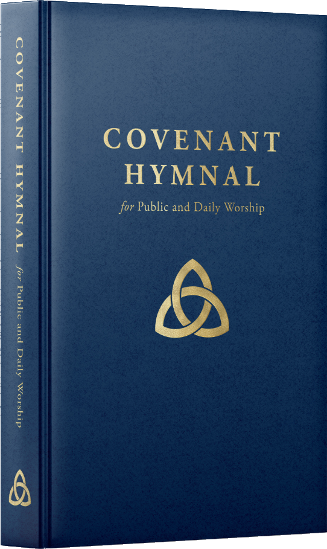
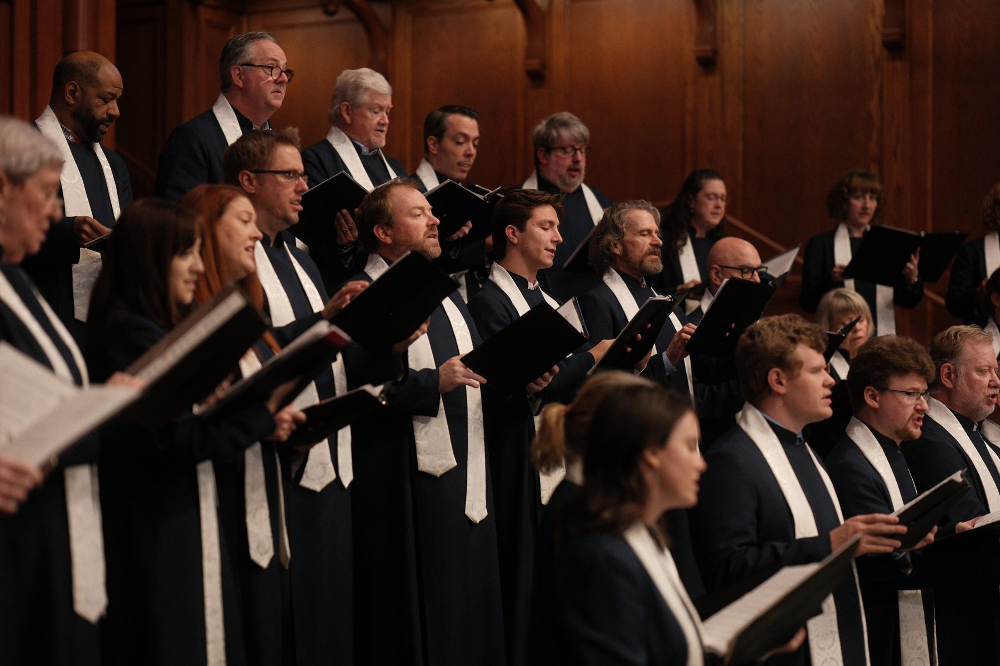
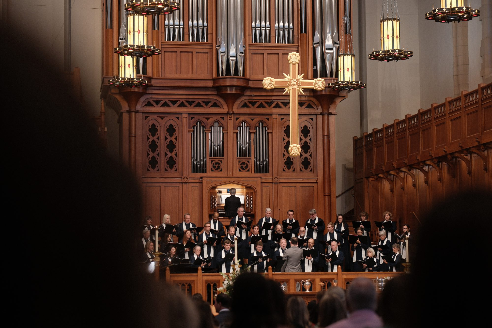
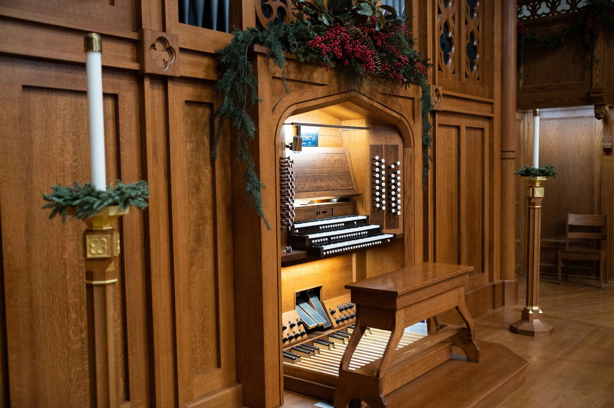
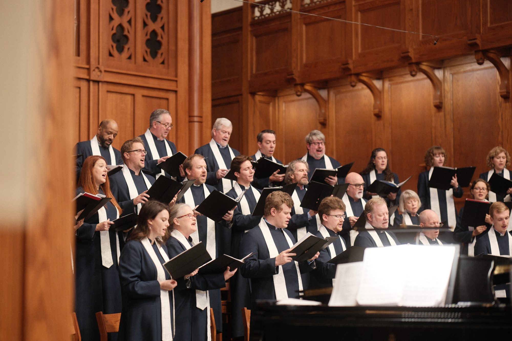
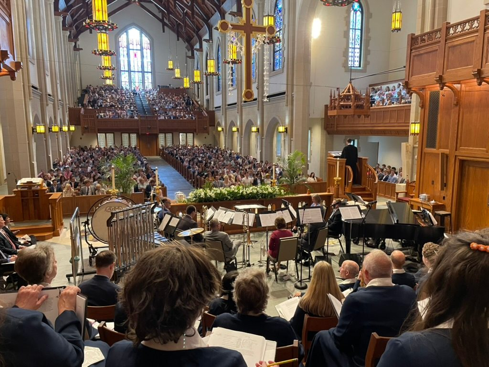

Metrical, Paraphrase, Christianized, or Based On? How the Hymnal Sings the Psalms
{{ b.text }}
{{ b.text }}

Worship is a grand and glorious conversation between God and his chosen, redeemed people. It is with thankfulness and by God’s gracious providence that the Covenant Hymnal is in your hands — assembled for public worship In Christ's Church, and made more readily and intentionally useful for family and personal worship.
It is our prayer that the Covenant Hymnal will be a blessing flowing to you and the Church for generations to come.
As we train children in the Scriptures and catechisms, we also want to teach them the music of worship. Twelve hymns a year, learned at home and sung together on the Lord’s Day.
“Let the word of Christ dwell in you richly, teaching and admonishing one another in all wisdom, singing psalms and hymns and spiritual songs, with thankfulness in your hearts to God.” Colossians 3:16
{{ p }}
Soli Deo Gloria!
The Session of Covenant Presbyterian Church, 2026

A hymnal for the pew, the family table, and the quiet hour: hymns and psalm settings, service music, the creeds and Westminster Standards, a five-year cycle of Hymns of the Month, and a guide to worship in the home.

The hymnal draws substantially from the Psalms, the inspired hymns of Scripture. Each setting's credit line tells you how closely it follows the Psalm — a metrical setting, a paraphrase, a Christianized paraphrase, or a hymn based on it — and the Index of Psalms gathers them psalm by psalm.
The hymns follow the shape of the faith: they begin with God our Father, move through the person and work of Jesus our Lord and the Holy Spirit, and on to the Word, the Church, the Gospel, and the Christian life, closing with hymns for special seasons and the service music sung each Lord's Day.
Within each division the hymns are gathered under sub-topics — the hymnal's own headings, printed in small capitals at the top of every page — so that a hymn on assurance, or lament, or the Lord's Supper can be found by turning to its place in the book as readily as by its number.
Behind the hymns stand the indices, the Apostles' and Nicene Creeds, the Westminster Confession of Faith and Shorter Catechism, the Hymns of the Month, and an introduction to family worship.
Everything on a page of this hymnal is meant to serve the singing of God’s people. Nothing on the page need be confusing or left to guesswork.
Introduction brackets above the staff, normally in two sets, show what to play when an organist or pianist wishes to give a short introduction. Where a hymn has an alternate harmonization or a descant, a note beneath the music says where to find it. Guitar chords are provided for some hymns.

Editions and prices will be announced with the first printing. Reserve now and we will write to you before anything is charged.
{{ e.body }}

{{ b.text }}

{{ f.a }}
Every hymn in the book was written by someone, somewhere, at a particular moment. Move along the line to see when — and what else was happening in the world at the time.
{{ tlSel.story }}
{{ tlSel.stanza }}
{{ g1Intro }}
{{ g1Message }}
Four hymns, four writers. Tap a hymn, then tap the person you think wrote the words.
{{ g2Message }}
Hymns first written before the Reformation, by era and date, each with its original first line (Greek in Latin letters) and its author or source. A hymn that came into English through a German version is followed by the German hymn.
{{ e.blurb }}
{{ s.text }}
{{ noTextMsg }}
This text is under copyright, so it is not reproduced here. The publisher, {{ pub.name }}, shows the full words on its own page. It opens in a small window beside this one.
{{ nt.lead }}
| {{ cl }} | |
|---|---|
| {{ rw.n }} | {{ cel }} |
{{ nt.credit }}{{ nt.creditLinkText }}.
The notes on this site — the bulletin notes, the pages on the words and the music, and the longer studies — were written for the Covenant Hymnal by Covenant Presbyterian Church, Nashville. They draw on the standard works of hymnology and on the hymnal’s own research library, and every page lists the sources it rests on. Where a source is quoted, the quotation is brief and credited; where a source is available online, the citation links to the page consulted, so that anything said here can be checked.
Most hymns in the Covenant Hymnal are in the public domain, and their words appear here in full. Hymns still under copyright are quoted only briefly, in the course of commentary, and their full texts are published on this site only where the copyright holder has granted permission for that use; the credit line on each page names the holder. The Covenant Hymnal’s own license to print a text does not extend to this website, and no copyrighted text is reproduced here in reliance on it.
Scripture quotations are from the ESV® Bible (The Holy Bible, English Standard Version®), © 2001 by Crossway, a publishing ministry of Good News Publishers. ESV Text Edition: 2025. The ESV text may not be quoted in any publication made available to the public by a Creative Commons license. The ESV may not be translated in whole or in part into any other language. Used by permission. All rights reserved.
Scripture references on this site link to the passage at ESV.org, and the verse pop-ups are provided by the ESV CrossReference Tool, courtesy of Crossway.
The Hymns for Him studies by Dr. Larry Roff are reproduced in full from Hymns4Him by the author’s permission, and each is linked to its page on his site. Where a study discusses a tune the Covenant Hymnal does not use, that portion is omitted and the page says so.
The hymn notes of Mark McConathy are reproduced in full by the author’s permission from Mark McConathy Program Notes, and each is linked to his site.
Neither may be reproduced from this site without the author’s own consent.
The pages cite, among others, The Canterbury Dictionary of Hymnology (Canterbury Press), John Julian’s A Dictionary of Hymnology (1907), the Lutheran Service Book: Companion to the Hymns (Concordia, 2019), the Psalter Hymnal Handbook (CRC Publications, 1998), C. Michael Hawn’s Sing with Understanding (GIA, 3rd ed.), and the hymn-story collections of Kenneth W. Osbeck, Robert J. Morgan and others, together with the text and tune pages of Hymnary.org. These works are quoted only in short passages, with attribution; the facts drawn from them are stated in our own words. Links to books point to a bookseller’s or publisher’s page, or to a free scan of a work out of copyright, so that readers can find the book itself; the site earns nothing from those links.
Images are reproduced under the license stated in each caption — most from Wikimedia Commons, in the public domain or under a Creative Commons license — with the credit the license requires.
If you hold rights in any material on this site and believe it has been used without proper permission or credit, or if you find an error of fact, please at Covenant Presbyterian Church, 33 Burton Hills Boulevard, Nashville, Tennessee 37215, and it will be put right.